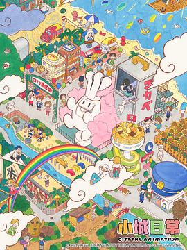

2026年8月 24 条
2026-08-14 07:08:35
 想看 欢迎来龙餐馆
想看 欢迎来龙餐馆
2026-08-12 19:16:18
 想看 欢迎再次登录
想看 欢迎再次登录
2026-08-12 18:25:43

YouTube上以前有不少这种，搬上大荧幕还挺有兴趣的
2026-08-11 22:41:54

老版评分高诶
2026-08-09 18:18:13
 玩过 节奏天国：奇迹之星 リズム天国 ミラクルスターズ ★★★★★
玩过 节奏天国：奇迹之星 リズム天国 ミラクルスターズ ★★★★★
前几周全金牌了，太喜欢这个游戏了，多人游戏我都是一手一个手柄玩的，问题不大，手速还行。 //7月2号首发玩起了，非常不错！ //终于等到了，可惜是switch的终章
2026-08-09 18:14:34
 看过 喜人奇妙夜 ★★★★★
看过 喜人奇妙夜 ★★★★★
还真是忘了标记，这个三喜，补标一下，质量不错，然后继续期待五喜。
2026-08-09 18:09:02

诶，竟然忘了标记已看。当时是一周一周追的，大爱OP ED！然后这次去日本终于打卡了京阿尼的办公大黄楼~ // 还是之前的配方！ //说到京阿尼，就来查查京阿尼，nichijou 赛高！
2026-08-09 17:56:34
看过 新·驯龙高手 / How to Train Your Dragon ★★★★☆
拖了很久终于有时间看完了，这个动画翻拍真人拍的还真不错，还原度很高，故事本身质量就过硬，看下来开始很过瘾的，推荐。
2026-08-08 19:35:22
doubak (豆备) 目前已经可以把时间线列出来了哦～
2026-08-08 18:54:25
doubak(dot)com （豆备） 生成豆瓣备份的样例已上线～ 目前vibe出来了一个极简版～ 后续继续vibe，以及欢迎大家试用+反馈
2026-08-08 16:54:27

2026-08-07 16:26:32
测试一下带图的广播咯也
2026-08-07 16:25:36
最近在vibe coding doubak的项目 然后备份下来的数据会可以帮你生成自己的静态网页，可以部署在任何地方。有很多其他的产品都可以用，但是都不是那么顺手，反正token也用不完，那就开干 这个做的也是不错的


2026-08-04 15:47:29

最近挺火的恐怖片？
2026-08-04 10:19:05
想玩 沉星之序 Order of the Sinking Star
2026-08-04 10:10:04
2026-08-04 05:51:48
 想看 刻刻
想看 刻刻
2026-08-03 11:36:19
在看 公寓黑风暴 / 아파트
奈飞竟然也开始按周更新了，不过这个节奏确实是奈飞的节奏，第一集放出来了一堆悬念，最后一分钟男主开始入行，做物业
2026-08-02 20:51:30
 看过 后室 / Backrooms ★★★☆☆
看过 后室 / Backrooms ★★★☆☆
看完一两懵逼，完全不能理解发生了什么，后来看了解说才知道原来这个是一个有特定背景的设定，类似于东方系列。知道了背景之后才真正觉得这个系列的惊悚之处，总之是一个设定十分猎奇的电影。
2026-08-02 06:43:32
没玩过1，但是看起来可以先试试2
2026-08-01 20:13:32
 看过 “骗骗”喜欢你 ★★★★☆
看过 “骗骗”喜欢你 ★★★★☆
确实还不错，剧情挺有趣的，有些反转，虽然略生硬，但是还是不错的。之前就说能上6分我觉得都是国产好片。这个女主也特别眼熟，然后想起来就是之前看的《凡人修仙传》的女主。
2026-08-01 17:11:04

2026-08-01 17:09:43
 看过 射雕英雄传：侠之大者 ★★★☆☆
看过 射雕英雄传：侠之大者 ★★★☆☆
算是正经看过的第一部射雕英雄传，还行吧，设定很不错，看来要补老版的了


{kind=link}
{kind=link}
{kind=link}
{kind=link}
{kind=link}
{kind=link}
{kind=link}
{kind=link}
{kind=link}